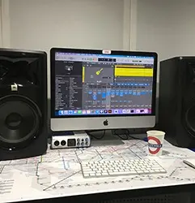

Звукозаписывающая студия Подземка состоит из двух комнат с полной звукоизоляцией и шумоподавлением. Это «Вокальная» комната 2 м.кв. и «Контрольная» - 6 м. кв. Обе комнаты объединены мультикором на 8 входов и выход под наушники. Такая конструкция позволяет не только качественно записывать вокалиста (или даже коллектив вокалистов) под готовый минус, но и писать живую группу в режиме лайв с ударной установкой в одной комнате и группой музыкантов - в другой. Телевизор на стене в вокальной заменит неудобный пюпитр со словами/партитурой или даже станет незаменимым помощником при начитке текста под видео ряд.
Тех райдер:
Микрофон: Rode NT1-A
Наушники: Beyerdynamic dt 770 Pro
Аудио интерфейс: Universal Audio Apollo x8p
Цены:
Запись
500 грн./час
Репетиционная База
Помещение Подземки также подойдет и для репетиций. Это может быть небольшой коллектив до 4 человек. Либо DJ, вносящий финальные правки перед релизом. Либо музыкальный преподаватель с учеником/ученицей. Да даже если ты просто будешь сам(а) и захочешь закрыться в вокальной комнате, чтобы покричать, поорать, или даже побеситься - мы все равно будем тебе рады (пока ты не начнешь ломать аппаратуру). Более того, если у тебя для накопления есть вся нужная техника и не нужна помощь звукорежиссера - нет смысла переплачивать за аренду студии. Просто приходи, плати за репетицию и подключайся ;)
Тех райдер:
Микрофоны: Shure SM58, S55
Музыкальная станция Akai MPC X - 2 скомбинированных вокальных/инструментальных входа, 2 инструментальных входа (простым языком: два вокала и две гитары/1 вокал и три гитары/ 4 гитары) и 8 Midi входов (для клавиш и установки)
Активные мониторы Electromotive Laboratories Model 2
Напольный монитор JBL EON Compact
Баланс и эквализация - цифровые.
Цены:
Индивидуальная
100 грн/час
Групповая
200 грн/час
Скомбинировання
250 грн/час

Аудио Продакшен
В Подземке можно создать/написать/дописать песню, на каком бы этапе она ни была. Пусть это будет всего лишь черновой текст одного припева. Или даже мелодия состоящая исключительно из “на-на-на”. Для нас этого уже достаточно, чтобы создать трек, который ничем не уступает песне в твоей голове и ни чуть не хуже того, что звучит на Apple Music и Spotify. А главное (!!!) Это будет сделано качественно и со вкусом ;)